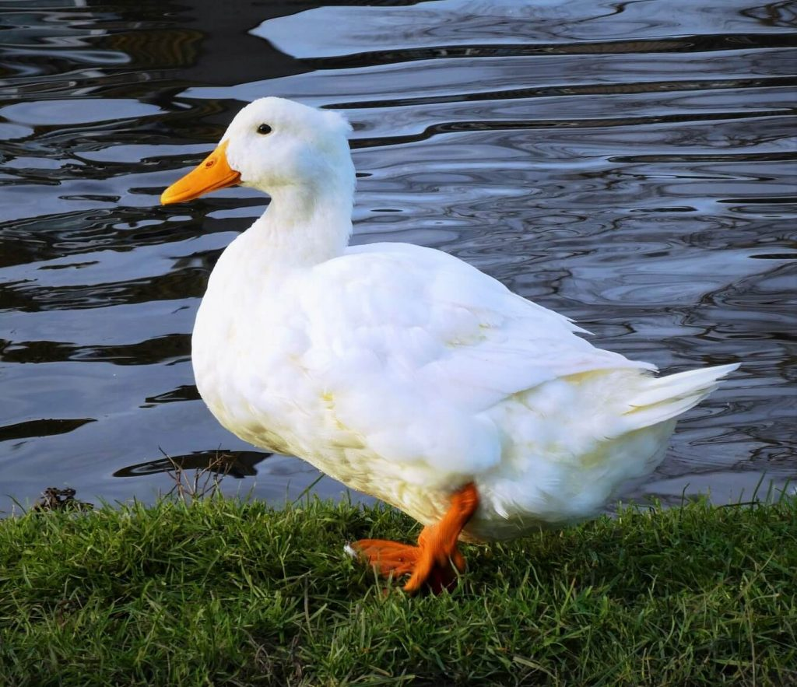

Project Website UTS
Profil Pengembang Website
Home
Biodata
Main Topic
Biodata Pemilik

Nama Lengkap
Fariz Agustian Firdaus
Nim
202506004
Nama Panggilan
Firdaus
Kampus
Politeknik Enjinering Indorama
Program Studi
Teknologi Rekayasa Mekatronika
Angkatan
2025
Hobi
Ngoding, Gaming, & Membaca